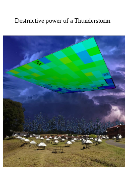
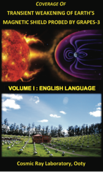
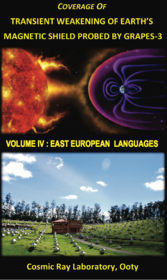
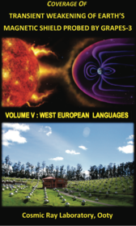

-A
A
A+
Pick a color scheme
Blue theme
Green theme
Red theme
Discovery
GRAPES-3 Discovery (2019)
Selected articles of GRAPES-3 discovery on
"Measurement of the Electrical Properties of a Thundercloud Through Muon Imaging by the GRAPES-3 Experiment"

GRAPES-3 Discovery (2017)
Worldwide coverage of GRAPES-3 discovery in 6 Volumes
119 Countries, 1093 Reports, 37 Languages
Vol-1
Vol-2
Vol-3

Vol-4
Vol-5
Vol-6

